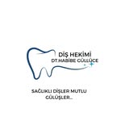
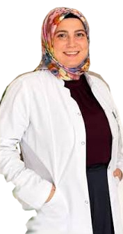
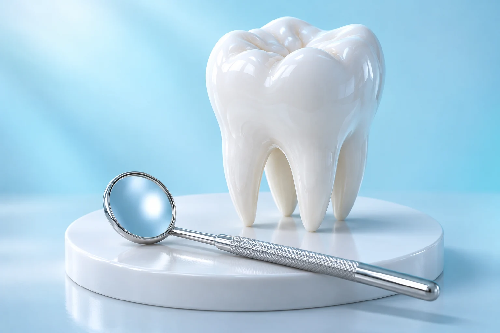
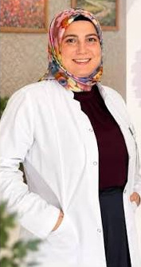
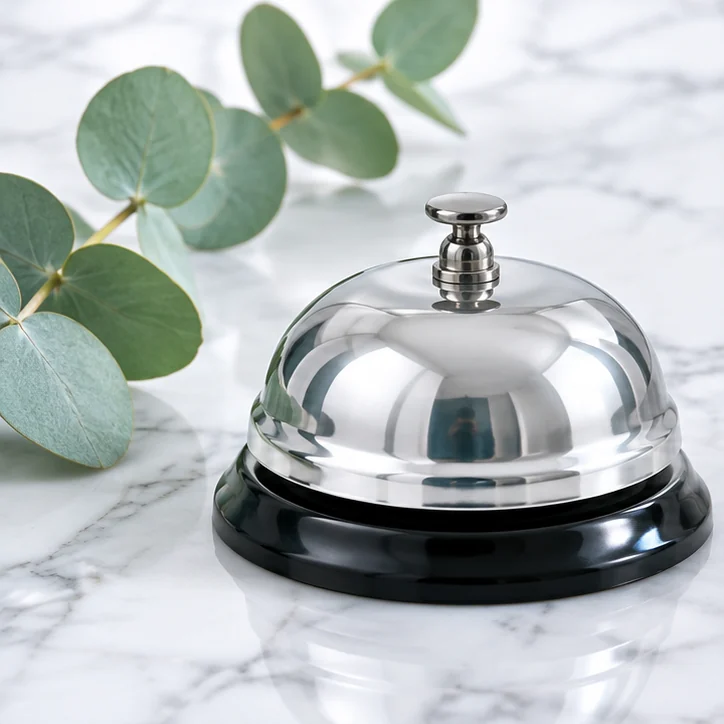
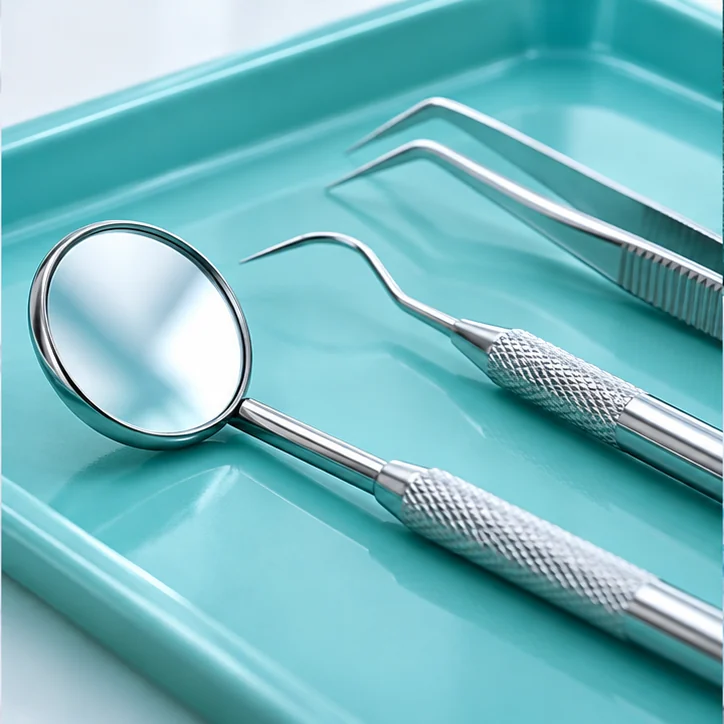
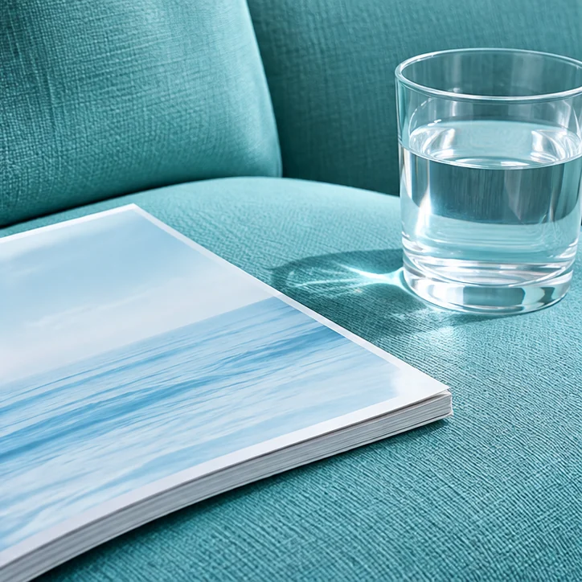

Günlük ağız bakımı
Diş aralarının temizliği, fırçanın ulaşamadığı yüzeylerdeki plağın uzaklaştırılmasına yardımcı olur.


Diş Hekimi
Ağız ve diş sağlığı
bilgilendirme rehberi.
Ağız ve diş sağlığı, koruyucu bakım ve diş hekimliği uygulamaları hakkında bilgilendirme.

Tıbbi içerikler hekim onayına tabi taslaktır.
İmplant, eksik dişin yerine yapılacak proteze destek sağlamak için çene kemiğine yerleştirilen bir yapıdır. Sinüs lifting, üst çenenin arka bölgesinde kemik yüksekliğini artırmayı amaçlayan cerrahi bir işlemdir.
Kanal tedavisinde dişin içindeki pulpa dokusu çıkarılır. Kök kanalları temizlenir, şekillendirilir ve doldurulur.
Diş çekimi, dişin kemiğindeki yuvasından çıkarılmasıdır. Yirmi yaş dişleri çenenin en arkasındaki üçüncü büyük azı dişleridir ve sürme durumları kişiden kişiye değişebilir.
Kompozit, diş renginde bir restorasyon malzemesidir. Diş dokusunda kayıp oluşan alanın formunu yeniden oluşturmak için kullanılabilir.
Diş taşı, plak tabakasının mineral birikimiyle sertleşmesi sonucu oluşur. Diş taşı temizliği bu birikintileri uzaklaştırmayı, polisaj ise diş yüzeyini parlatmayı amaçlar.
Diş beyazlatma, diş renginin açılmasını amaçlayan uygulamalara verilen addır. Mevcut dolgu ve kaplamalar doğal diş dokusuyla aynı şekilde renk değiştirmez.
Zirkonya ve lityum disilikat, diş restorasyonlarında kullanılan farklı seramik malzemelerdir. Emax adı, bu bağlamda lityum disilikat restorasyonları ifade eder.
Süt dişleri çiğneme ve konuşmada rol oynar, kalıcı dişler için yer tutar. Çocuklukta ağız bakımı alışkanlıkları yetişkin desteğiyle gelişir.

Diş Hekimi

Çukurova Üniversitesi
Diş Hekimliği Fakültesi, 2019
Eğitim bilgisi hekim onayına tabidir.
Galeri, klinik fotoğrafları için ayrılan alanları gösterir.



Bilgilendirme taslağı · Hekim onayına tabidir.
Diş aralarının temizliği, fırçanın ulaşamadığı yüzeylerdeki plağın uzaklaştırılmasına yardımcı olur.
Florürlü diş macunuyla günde iki kez, iki dakika diş fırçalamak günlük ağız bakımının temelidir.
Kontrol sıklığı ağız sağlığına ilişkin bulgulara ve kişinin risk durumuna göre değişebilir.
Şehitkamil Nikah Salonu civarı